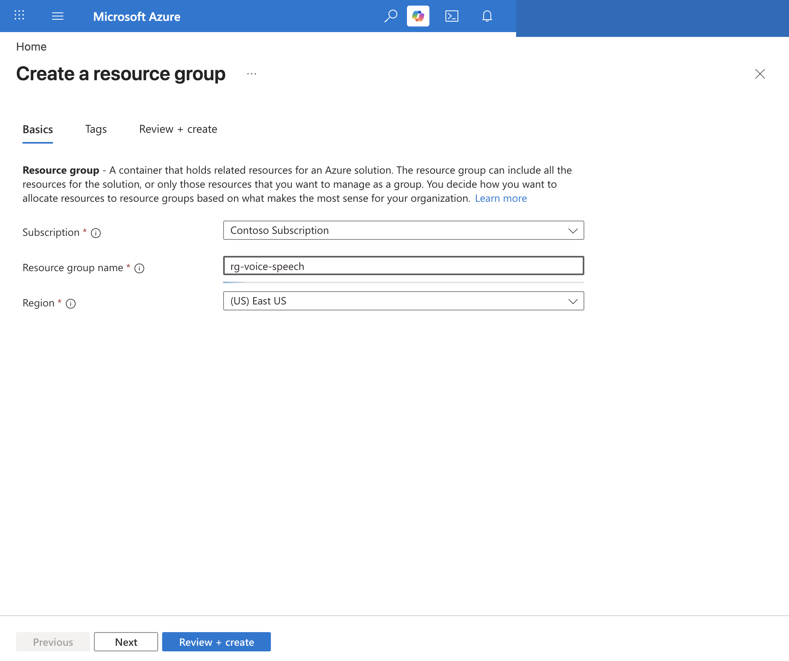
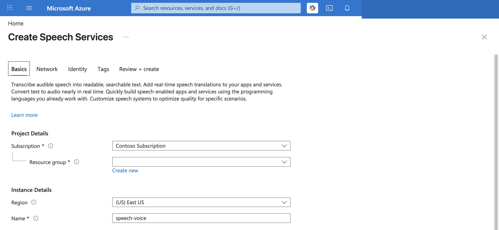
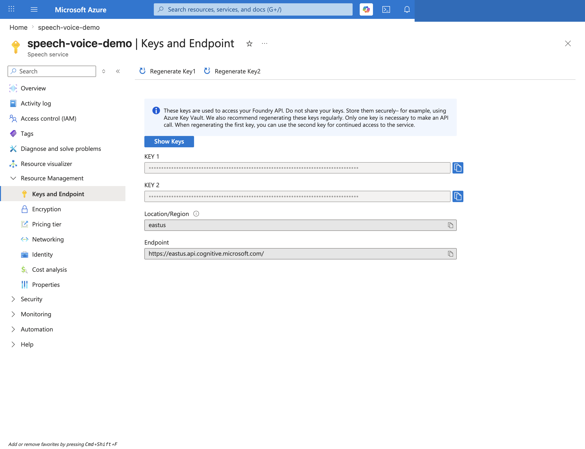
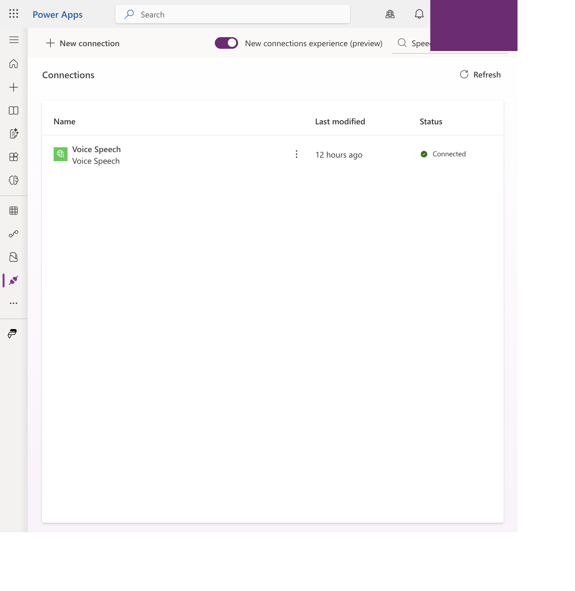

01 / Overview and Prerequisites
搭建路线：五种资源、两处门户、一把密钥
这套流程分两半：先在 Azure 建好语音服务（第 2–4 章），再到 Power Platform 导入我们提供的 Solution 并填两个值（第 5 章）。你会用到两个网站——Azure 门户 portal.azure.com、Power Platform 门户 make.powerapps.com，外加电脑上一个「终端」窗口跑几条命令。每一步都配了截图，照着点、照着填即可。
flowchart LR
A["应用
(沙箱 connect-src none)"] -->|executeAsync| C["自定义连接器"]
C -->|x-api-key| F["Function 代理
/tts /stt"]
F -->|订阅密钥| S["Azure Speech
TTS + STT"]
S --> F --> C --> A
记住三条边界：① 订阅密钥只在 Function 应用设置里；② 共享密钥（x-api-key）由连接器发送、挡匿名滥用；③ 应用永远只认连接器逻辑名，从不直接见到 Function 地址或密钥。
全篇最该记住的一张表。Azure 侧建好后，只有两个值要交到 Power Platform，各有唯一去处；Speech 订阅密钥留在 Function、绝不外传。后面的章节只是把这张表做实。
| Azure 产出的值 | 从哪拿 | 填到 Power Platform 的哪里 |
|---|---|---|
| https://<func>.azurewebsites.net Function 地址 | Function 概览页（§2 / §4） | 导入 Solution 时填环境变量 biz_VoiceFunctionHost；连接器 host 固定引用这个变量 |
| SPEECH_API_KEY 的值 防滥用共享密钥 | §3 用 openssl 生成的那串 | 新建连接时的 x-api-key 输入框（§5 步骤 3） |
| ❌ Speech 订阅密钥 + 区域 | §2 Keys and Endpoint | 不给 PP——只写进 Function 应用设置 SPEECH_KEY / SPEECH_REGION（§3） |
一个 Azure 订阅
能创建认知服务、Function、存储。免费额度足够起步（Speech F0）。
命令行工具
Azure CLI（az）、Node.js、zip。装法：Mac 终端跑 brew install azure-cli node；Windows 到 aka.ms/installazurecliwindows 下载。装好后运行一次 az login 登录。第 3–4 章会用到。
一个 Power Platform 环境
含 Dataverse，且允许自定义连接器（未被 DLP 策略拦截）。用于导入我们的 Solution 并建连接。
02 / Create the Azure Resources
资源组、Speech、存储、Function 四件套
先登录 Azure 门户：浏览器打开 portal.azure.com，用你的 Azure 账号登录。然后按顺序建 4 样东西（资源组、Speech、存储、Function）。每样都是同一套路：顶部搜索框搜名字 → 点 Create（新建） → 填几个框 → 点 Review + create。下面逐个照着做。
| 资源 | 示例名（通用） | 档位 / 备注 |
|---|---|---|
| 资源组 | rg-voice-speech | 装本指南全部资源 |
| Speech 资源 | speech-voice | F0 免费（生产 S0） |
| 存储账户 | voicespeechst<唯一> | 全局唯一、全小写 |
| Function App | voice-speech-fn-<唯一> | 全局唯一 · Node 22 |
区域：示例用 East US。面向中国用户可选 East Asia 以降低延迟。Speech、Function、存储建议同区域。
档位：F0 是免费档，仅供开发 / 试用——有硬性限制（并发与月度事务受限、每订阅每区域仅 1 个、部分功能不可用）。正式项目 / 生产必须用 S0（标准档、按量计费）才有完整配额与并发。建 Speech 时按用途选定价层：开发填 F0、生产填 S0；后续也可在 Speech 资源的 Pricing tier 里升档，无需改 Function 或 app。
门户搜索栏输入「Resource groups」→ Create → 选订阅 → 名称填 rg-voice-speech → 区域 East US → Review + create → Create。

搜索「Speech」（Azure AI services 下的 Speech service）→ Create → 资源组选 rg-voice-speech → 名称 speech-voice → 区域 East US → 定价层 Free F0 → Review + create。

进入 speech-voice → 左侧「Keys and Endpoint」→ 复制 KEY 1 与 Location/Region。这两样只在下一步写进 Function、之后就不再需要手动接触。

搜索「Storage accounts」→ Create → 资源组 rg-voice-speech → 名称 voicespeechst<唯一>（全小写、全局唯一）→ 区域 East US → 冗余 LRS → Create。Function 运行需要它。
搜索「Function App」→ Create → Consumption 计划 → 名称 voice-speech-fn-<唯一> → Runtime stack Node.js → 版本 22 LTS → 操作系统 Linux → 区域 East US → 存储选上一步的 voicespeechst<唯一>。⚠️ 不要选 Node 24（消费计划上起不来）。
03 / Configure and Deploy the Function Code
写入密钥、生成防滥用密钥、上传代码
资源建好后，这一步在电脑的「终端」里做（Mac 打开「终端 Terminal」，Windows 打开 PowerShell）。作用：把 Speech 密钥写进 Function、生成一把防滥用密钥、再把代理代码传上去。把下面命令逐条复制、回车运行即可，命令里的名字换成你自己的。
下面有两个代码块，用法不同。第一个是部署本身：把整段复制到终端一次运行（它按注释 1→2→3 依次写密钥、用 run-from-package 传代码、放开 CORS，不是分三次输入）。图 03-1 的第二个代码块是可选核对，部署完单独跑一次即可（$ 开头那行是命令，其余是应看到的输出）。命令里的名称先换成你自己的：RG=rg-voice-speech、FUNC=你的 Function 名、STORAGE=你的存储名、REGION=eastus；代理代码来自仓库的 azure/speech-token-broker 目录。
坑：CLI 可能默认把 Function 建成 Node 24（称 20 已 EOL），但 Node 24 在 Linux 消费计划上起不来（持续 503）。用 Node 22 LTS；若已建在 24 上：az functionapp config set --linux-fx-version 'Node|22' 再重启。
坑 2（企业租户高发，比 Node 版本更隐蔽）：Function 的运行时状态与 run-from-package 代码包都要经「共享密钥 + 公网」读取存储账户。若贵司安全基线策略把该存储账户的 allowSharedKeyAccess 或 publicNetworkAccess 关掉，Function 连自己的存储都读不到 → 所有端点持续 503（重启无效）。排查：az storage account show -n $STORAGE -g $RG --query '{sharedKey:allowSharedKeyAccess,publicNet:publicNetworkAccess}'——两者须为 true / Enabled。恢复：az storage account update -n $STORAGE -g $RG --allow-shared-key-access true --public-network-access Enabled，再 az functionapp restart -n $FUNC -g $RG。若策略会自动重新锁定，需为该存储账户申请策略豁免，或改用 Elastic Premium 计划 + VNet 集成 + 私有终结点 + 托管标识 的合规架构。
换合规做法有什么影响？app 端：零影响——应用只经连接器调 Function 端点，不关心 Function 怎么托管、怎么访问存储，无需改代码或重建。Function 端：只换托管方式、不改代码——要让存储保持锁定，就把 Function 从消费计划迁到 Elastic Premium（支持 VNet 集成）、给存储加私有终结点、AzureWebJobsStorage 与 run-from-package 改用托管标识；/tts、/stt 业务代码原样不动。代价：Premium 计划无免费档、按常驻实例计费，比消费计划贵。
04 / Verify the Backend
带上 x-api-key 头，两个端点都要通
部署完先用 curl 自测，确认「带密钥能调、不带密钥被挡」。这一步不进 Power Platform，纯验证 Function 本身。
三条都符合预期，就说明：Function 通了、密钥生效了、匿名调用被挡了。可以进入 Power Platform 侧。
05 / Import the Solution and Enter Two Values
连接器与应用随 Solution 一起进来，你只填 endpoint 和 api-key
Azure 后端建好后（第 2–4 章），Power Platform 这一侧无需你手建连接器、也无需改应用代码。我们提供一个 Managed Solution，里面已打包好应用、自定义连接器（host 绑定环境变量 biz_VoiceFunctionHost、API Key 鉴权）以及连接引用 biz_SalesCopilotSpeech。你只需导入它，并交出两个值：Function 地址填进环境变量、api-key 填进新建的连接。
| 随 Managed Solution 一起进来（无需你建） | 你要提供 / 操作 |
|---|---|
| 应用（已接好连接引用，无需重建） | 导入 Solution |
| 自定义连接器（host = 环境变量、API Key 鉴权） | 环境变量 biz_VoiceFunctionHost 填 Function 地址 |
| 连接引用 biz_SalesCopilotSpeech | 新建 Speech 连接、填 api-key，再把连接引用指向它 |
为什么连接要你自己建：连接器和连接引用是「定义」，随 Solution 分发；但「连接实例」持有 api-key 这类凭据、是环境专属的，绝不随包外传——所以每个环境都要自己新建一个连接、填自己的 api-key。
make.powerapps.com → 选目标环境 → 左侧 Solutions → Import solution → 上传我们提供的 .zip → Next。向导会让你为标准连接器（Dataverse、Copilot Studio）登录授权，并进入环境变量一步。
在向导的环境变量一步，把 biz_VoiceFunctionHost 填成你的 Function 主机名（只填 <func>.azurewebsites.net，不带 https:// 和 /api）。连接器 host 固定引用这个变量，所以换环境只改这里、应用无需重建。
自定义连接器随包导入、在导入完成前尚不存在，所以向导不会当场让你为它建连接。导入完成后：左侧 Connections → + New connection → 搜到 Sales Copilot Speech → 因是 API Key 鉴权会弹输入框 → 填第 3 章生成的 api-key → Create（状态应为 Connected）。

打开导入进来的 Solution → Connection references → biz_SalesCopilotSpeech → 右侧把 Connection 选成上一步新建的那个 → Save。至此应用语音即可用：应用早已接好这个连接引用，无需任何代码改动或重建。
06 / Security and Next Steps
密钥、CORS、清理
收尾三件事,首次部署都很快:护好防滥用密钥、上线前收紧 CORS、试用完删资源组。
共享密钥挡匿名滥用
端点匿名可达，但设了 SPEECH_API_KEY 后，每次调用必须带匹配的 x-api-key，否则 401。密钥只在服务端与连接里，不入前端、不入图。
上线前收紧 CORS 与限流
dev 期 CORS 用了 *；上线前收窄到具体 Power Apps 来源，并加每 IP/分钟限流。CORS 只挡浏览器，密钥才是真正的门。
试用完删资源组
试用完删资源组：本指南所有资源都在 rg-voice-speech 里，删资源组即全清：az group delete -n rg-voice-speech --yes。免费档几乎无费用，但不用就删干净。